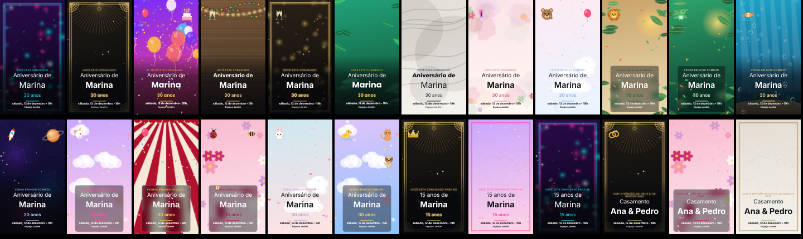
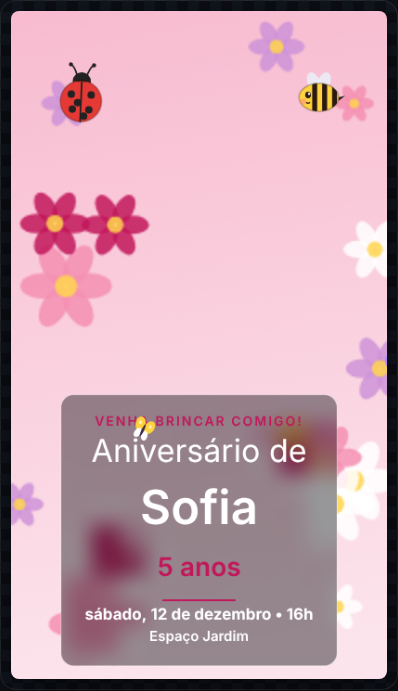

Os bichinhos, os efeitos e os modelos são desenhos próprios da Brightway, sem personagem nem arte de outras empresas. Nada sai do aparelho: a música e o vídeo ficam com você. Use só música que você pode usar (sua, comprada ou livre).